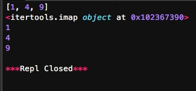

Python的内建模块itertools提供了非常有用的用于操作迭代对象的函数。
首先，我们看看itertools提供的几个“无限”迭代器：
# -*- coding: utf-8 -*-
import itertools
natuals = itertools.count(1)
for n in natuals:
print n

因为count()会创建一个无限的迭代器，所以上述代码会打印出自然数序列，根本停不下来，只能按Ctrl+C退出。(有假死的风险)
cycle()会把传入的一个序列无限重复下去：
# -*- coding: utf-8 -*-
import itertools
cs = itertools.cycle('ABC')
for n in cs:
print n

同样停不下来。(很容易程序假死....)
repeat()负责把一个元素无限重复下去，不过如果提供第二个参数就可以限定重复次数：
# -*- coding: utf-8 -*-
import itertools
ns = itertools.repeat('A',10)
for n in ns:
print n

无限序列只有在for迭代时才会无限地迭代下去，如果只是创建了一个迭代对象，它不会事先把无限个元素生成出来，事实上也不可能在内存中创建无限多个元素。
无限序列虽然可以无限迭代下去，但是通常我们会通过takewhile()等函数根据条件判断来截取出一个有限的序列：
# -*- coding: utf-8 -*-
import itertools
natuals = itertools.count(1)
ns = itertools.takewhile(lambda x:x<=10, natuals)
for n in ns:
print n

itertools提供的几个迭代器操作函数更加有用：
chain()
chain()可以把一组迭代对象串联起来，形成一个更大的迭代器：
# -*- coding: utf-8 -*-
import itertools
for c in itertools.chain('ABC', 'XYZ'):
print c

groupby()
groupby()把迭代器中相邻的重复元素挑出来放在一起：
# -*- coding: utf-8 -*-
import itertools
for key,group in itertools.groupby('AAAABBBBBCCCAAA'):
print key ,list(group)

这里注意到打印group的时候用的是list(group),这是因为gruupby返回仍然是一个迭代器!!,迭代器中的元素可以用list(迭代器)来将元素显示出来,但是要注意不要用list来显示那些无限循环的迭代器(会死机....).
# -*- coding: utf-8 -*-
import itertools
cs = itertools.repeat('A', 10) # 注意字符串也是序列的一种
print list(cs)

imap()
imap()和map()的区别在于，imap()可以作用于无穷序列，并且，如果两个序列的长度不一致，以短的那个为准。
# -*- coding: utf-8 -*-
import itertools
for x in itertools.imap(lambda x, y: x * y, [10, 20, 30], itertools.count(1)):
print x

注意imap()返回一个迭代对象，而map()返回list。当你调用map()时，已经计算完毕,当你调用imap()时，并没有进行任何计算：
# -*- coding: utf-8 -*-
import itertools
r = map(lambda x: x*x, [1, 2, 3])
print r # r已经计算出来了
n = itertools.imap(lambda x: x*x, [1, 2, 3])
print n # n只是一个迭代对象
for x in n:
print x

必须用for循环对r进行迭代，才会在每次循环过程中计算出下一个元素.
这说明imap()实现了“惰性计算”，也就是在需要获得结果的时候才计算。类似imap()这样能够实现惰性计算的函数就可以处理无限序列：
# -*- coding: utf-8 -*-
import itertools
r = itertools.imap(lambda x: x*x, itertools.count(1))
for n in itertools.takewhile(lambda x: x<100, r):
print n

如果把imap()换成map()去处理无限序列:
# -*- coding: utf-8 -*-
import itertools
r = map(lambda x: x * x, itertools.count(1))
print r
# for n in itertools.takewhile(lambda x: x<100, r):
# print n
会造成电脑死机,由于map()返回的是一个list，所以当用它去处理无限序列的时候，它会尝试计算完之后才返回，但是序列是无限的，所以它会一直计算下去，致使其占用的系统的内存越来越高。(很坑爹....)
ifilter()
不用多说了，ifilter()就是filter()的惰性实现。
小结
itertools模块提供的全部是处理迭代功能的函数，它们的返回值不是list，而是迭代对象，只有用for循环迭代的时候才真正计算。